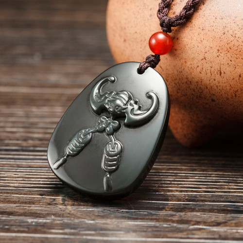

Tips：农历生肖运势即将进入2018年狗年，属猴2018年运势及运程抢先看，新年早开运，狗年求吉祥！
属猴2017年运势及运程详解
出生年：2004、1992、1980、1968、1956、1944年。
属猴的年龄查询：属猴的今年多大
属猴人2017年事业运势
子玉风水大师点评：小心从事 慎防过劳
生肖属猴的人，进入2017年丁酉鸡年，今年的运程虽然略有改善，但仍然会有诸多阻滞，故此未可掉以轻心，以免阴沟里翻船。因有「红鸾」吉星照命，今年将会人缘甚佳，而且易与异性擦出感情火花，很有可能结出情花爱果！但在工作进展方面却并不是这样称心如意，因有「天杀」凶星出现在命宫，警示今年在工作方面将会遇到很多意想不到的困阻，倘若不事先有所准备，很可能手足无措而阵脚大乱！幸而若能小心处理，这些困阻将可迎刃而解！而最值得关注的是「病符」照命，属猴的人今年在努力工作之余，必须小心关注自己的身体健康，慎防积劳成疾。全年的工作运势甚为平均，而以年初的两个月最为畅顺；属猴的人若想今年事业大有进展，便应好好把握这段好时机！虽然今年的工作进展大致良好，但可惜年尾十二月却会有诸多阻滞，处事必须加倍小心谨慎，以免因一时失误而浪费了一年辛苦的成果。今年工作较多困阻的月份，是农历二月、五月、七月及十二月。今年工作进展畅顺的月份，是农历的二月、五月、七月及十一月，应好好把握时机奋发向上。

属猴人2017年财运精准预测
子玉风水大师点评：收入平稳 切戒贪婪
属猴的人，今年财运虽然并非十分畅旺，但尚算相当平稳！正财收入稳定，但却不能期望过高。若要投资创业或置业，事前必须考虑周详，切勿鲁莽行事，以免招致无谓损失。横财将会偶有收获，但切忌贪胜不知输！此外，今年有可能受骗破财，故此切勿妄起贪念，以免被贪婪蒙蔽而堕人金钱陷阱。今年很可能需要动用一笔医药费，故此应及早储蓄以备用。今年财运较佳的月份，是农历二月、五月、七月及十一月，好好把握时机开源节流。农历三月及四月会有不少额外开支，提防大失预算。八月及十月切戒赌博。十月需防被人侵吞钱财。年尾十二月慎防堕入金钱陷阱。
属猴人2017年健康运势
子玉风水大师点评：病符照命 慎保胃肝
属猴的人，今年健康欠佳，因有「病符」凶星出现在命宫中，警示令牛奶须特别注意健康保养；因为稍有疏忽，便很可能被病魔乘虚而入，疾病缠身！今年最需要注意的，是肠胃及肝的保养；一有毛病出现，便必须立刻延医诊治，千万不可拖延。因为同时有「岁杀」凶星出现，警示今年亦将易惹血光之灾，故此除了要慎防过劳之外，并需密切注意出入平安。今年健康易出问题的月份，是农历正月、三月、四月、六月及九月；农历十二月慎防血光之灾。
属猴人2017年爱情婚姻运势
子玉风水大师点评：红鸾照命 情投意合
属猴的婚配：属猴的和什么属相最配
肝属猴的人，今年因有「红鸾」吉星照命，故此非但易得人缘，而且亦易与异性投缘，很可能结出情爱花果。今年将会有不少异性出现在身边，必须保持冷静克制，以免多情反被多情误！讲记紧切勿因为儿女私情而耽误了事业发展，否则很快便会尝到苦果。今年感情发展良好的月份，是农历二月、五月、七月及十一月，应好好把握时机来培养情苗。今年感情易出问题的月份，是农历六月及八月。
属猴的青少年2017年运势
今年福至心灵，脑筋灵活，若能专心向学，定可名列前茅！但可惜健康欠佳，身心俱疲，慎防因而影响了学业情绪；故此今年一定先要有良好的体魄。此外，今年易惹小人，必须尽两个保持低调，切勿到处招摇树敌。
属猴的女性2017年运势
今年福星高照，家有喜事，喜气洋洋！财运颇佳，家庭经济大有增长，但横财不利，切勿强求！并切勿太易轻信别人，以免受爆破财。属猴的少女今年红鸾高照，感情方面如鱼得水，很可能结出情花爱果，共谐连理。
属猴人2017年吉祥物

属猴人2017年吉凶方位
属猴的人今年的三个生旺吉方，是东方、西南及东南；若能把睡床、工作台和沙发摆放在屋内这三个方位上，便可符合这生肖今年的风水趋吉之道，有助改善流年运程。倘若未能如此，最少亦要把这三种最重要的家具避开东北及北方，以符合避凶之道。以上所提出的吉凶方位，是纯以生肖属猴的人来计算；而与其它十二生肖无关，请勿混淆。
属猴人2017年幸运色
属猴的人今年的生旺颜色是橙、黄以及红色；若能利用这些颜色来布置房间、或配衬衣物，这会对改善流年运程大有帮助！属猴的人今年忌灰色及青色，最好能尽量避免使用。
属猴人2017年幸运数字
属猴的人今年的生旺数字是2及8。
抢先关注：属猴的人2018年运程
不同猴年出生的属猴人2017年运势详解
2004年属猴的人2017年运程
2004年出生的人，今年脑筋灵活，若能专心向学，定可名列前茅！但可惜健康欠佳，慎防因而影响学业进展。
1992年属猴的人2017年运程
1992年出生的人，今年易得人缘，而且易与异性投缘，很有可能结出情花爱果。今年正是力争上游的好时机。92年属猴人今年若要开运解灾，增旺运势，可佩戴或摆放本站周易专家团队精心设计的属猴2017吉祥物吊坠，该圣品为一只蝙蝠嘴衔两串铜钱，采用高档彩虹眼黑曜石精雕而成，寓意您在2017年事业如意，财源稳遂，供享丰厚，福瑞临门。同时可挡煞防灾，添加吉运。亦可同时佩戴增庆堂属猴六合贵人手链，更具功效。开车人士，可在爱车挂上一串增庆堂吉祥莲花琉璃挂件，以保行车安全。
1980年属猴的人2017年运程
1980年出生的人，今年工作进展会有不少阻滞，必须沉着应变。财运反覆，投资必须三思，以免招致损失。80年属猴人今年若要开运解灾，增旺运势，可佩戴或摆放本站周易专家团队精心设计的属猴2017吉祥物吊坠，该圣品为一只蝙蝠嘴衔两串铜钱，采用高档彩虹眼黑曜石精雕而成，寓意您在2017年事业如意，财源稳遂，供享丰厚，福瑞临门。同时可挡煞防灾，添加吉运。亦可同时佩戴增庆堂属猴六合贵人手链，更具功效。开车人士，可在爱车挂上一串增庆堂吉祥莲花琉璃挂件，以保行车安全。
1968年属猴的人2017年运程
1968年出生的人，今年工作进展尚算平稳，但可惜会有诸多是非纷争，切勿意气用事。很可能要破财挡灾。68年属猴人今年若要开运解灾，增旺运势，可佩戴或摆放本站周易专家团队精心设计的属猴2017吉祥物吊坠，该圣品为一只蝙蝠嘴衔两串铜钱，采用高档彩虹眼黑曜石精雕而成，寓意您在2017年事业如意，财源稳遂，供享丰厚，福瑞临门。同时可挡煞防灾，添加吉运。亦可同时佩戴增庆堂属猴六合贵人手链，更具功效。开车人士，可在爱车挂上一串增庆堂吉祥莲花琉璃挂件，以保行车安全。
1956年属猴的人2017年运程
1956年出生的人，今年切勿妄起贪念，以免因贪而受骗破财。密切注意肠胃及肝的保养，切勿讳疾忌医。
1944年属猴的人2017年运程
1944年出生的人，今年因有病符照命，故此必须密切注意健康保养，以免疾病缠身。横财不利，切勿强求。
属猴人2017年全年每月运势
农历正月 公历2017年2月3日至3月5日
本月运势反复，未可言吉
生肖属猴的人今年运势略有起色，但年初这个月时机未至，故此暂时未可急进，只宜蓄势以待。工作进展诸多波折，总是难以一气呵成！在这段期间最重要的，是必须有自己立场，坚守不移；而切勿随波逐流任人摆布，否则便难有立足之地。财运似是而非，正财收入尚可，但暂时仍不是作重大投资的时机；勉强为之，只会自招损失。健康欠佳，新春应酬切忌暴饮暴食，以免肠胃及肝脏因而受损，并需慎防风寒。
农历二月 公历2017年3月6日至4月4日
本月吉星拱照，喜气洋洋
因为命宫中吉星拱照，这个月大吉大利，气势如虹，有如日正中天，晦气一扫而空。工作进展转趋畅顺，而且会有贵人相助，正是力争上的良机！在这段期间最重要的，是不要被胜利冲昏了头脑，必须冷静客观检讨自己实力，实事求是，努力充实自己，这样才可经得起日后考验。财运大有起色，正财及横财俱有收获，但可惜月尾一落千丈，故此切忌贪胜不知输。这个月人缘良好，易与异性投缘，喜气洋洋。
农历三月 公历2017年4月5日至5月5日
本月风云变色，枝节横生
这个月因为有「天杀」凶星照命，故此运势急剧逆转，风云变色，非但很多潜伏已久的工作问题陆续浮现出来，而且人事纷争亦接连而来，以致工作进展枝节横生！在这期间最重要的，是要懂得随机应变，因应不同的困阻来寻求不同的变通化解方法，否则便会一筹莫展。财运破损，理财必须加倍小心谨慎，尽量避免浪费，以免出现经济危机。身体状况欠佳，必须尽量多些休养生息，以免积劳成疾而后患无穷。
农历四月 公历2017年5月6日至6月5日
本月反复向好，小心饮食
这个月的运势反复向好，上半月仍会有诸多困阻，但月中在迂回曲折之中，将会渐入佳境。工作进展仍会存有暗涌，而且人事纷争亦未完全平息下来，所以切勿掉以轻心！在这段期间最重要的，是要专心工作，心无旁骛地埋头苦干；切勿多管闲事，以免惹起麻烦而打乱步骤。财运虽略有起色。但仍需设法量入为出，慎防因为会有不少额外开支而大失预算。这个月必须密切注意日常饮食卫生，以免病魔乘虚而入。
农历五月 公历2017年6月6日至7月7日
本月福至心灵，事半功倍
这个月因有福星高照，运势转趋畅旺，工作困阻一扫而空，而困扰多时的人事纷争亦将烟消云散。因为移至心灵，故此创意特佳，处理事务得心应手！在这期间最重要的，是切勿自而盛气凌人，独断独行，以免众叛亲离而独木难支；只有以谦厚待人，得道多助才可迈向成功。财运大有起色，正财收入稳定丰足，可作多元化投资，将会有利可图。这个月会有不少异性出现在身边，感情生活多姿多彩，甜蜜温馨。
农历六月 公历2017年7月8日至8月7日
本月诸多争拗，慎防失控
因有「寡宿」凶星照命，这个月的运势一落千丈；非但工作进展举步维艰，而且将会有请多争拗冲突！在这段期间最重要的，是必须待人以诚，不偏不倚地去化解纷争；并且要灵活运用以柔制刚，以退为进的策略来对付那些难缠对手；而切勿意气用事，针锋相对便容易失控。财星破损，理财稍一不慎，便很可能失控而大量流泄。健康情况反复，尽量避免过劳。这个月感情特别丰富，必须冷静克制，以免误己误人。
农历七月 公历2017年8月8日至9月7日
本月奋发向上，力创新猷
因为命宫中吉星高照，灾星消退，故此晦气尽消，气象一新，晴空万里任翱翔。工作困阻消除，处理业务得心应手，而且得道多助，正是奋发向上的大好时机！在这段期间最重要的，是要打铁趁热，必须乘时奋发向上，以免被人捷足先登！并且切戒墨守成规，应该因应时势变化而作出变通调整，这样才可适者生存。财运亨通，财源广进，投资有利可图。社交应酬繁忙，很可能有一段难忘的邂逅，好好珍惜机缘。
农历八月 公历2017年9月8日至10月8日
本月感情易变，自求多福
这个月的运势反复浮沉，时好时坏；工作进展暗涌潜伏，很可能变生不测；倘若不事先有所准备，便将手足无措而阵脚大乱！在这地段期间最重要的，是处理事务必须尽量亲力亲为，自求多福，多劳多得，努力将必有好回报，绝不会徒劳无功。这个月感情易起风波，很可能有第三者出现；切勿冷落爱侣，必须多些沟通示爱，以免感情出现裂痕。财运先盛后衰，下半月钱财易泄，横财切勿强求，以免焦头烂额。
农历九月 公历2017年10月9日至11月7日
本月病符照命，慎保安康
因为命宫中凶星混杂，故此晦气弥漫，工作前境暧昧，而且人事纷争迭起，故此切勿轻举妄动，以免莫名其妙地断送了大好前途！在道段期间最重要的，是要尽量息事宁人，千万不可意气用事，惹事生非；请记紧冤家宜解不宜结，否则便会寸步难行。因有「病符」凶星照命，警示这个月健康情况反复，容易被病魔趁虚而入，必须密切注意日常饮食卫生，并须尽量避免过劳；一有毛病出现，便需这即延医诊治。
农历十月 公历2017年11月8日至12月7日
本月远离损友，慎防侵吞
这个月的运势浮沉反复，吉凶参半，故此暂时仍未可把警惕之心松懈下来。工作进展转趋畅顺，但人事纷争仍未平息！在这期间最重要的，是切勿冒险急进，必须步步为营，以免不慎堕入陷阱！此外，必须远离损友，以免白狗偷食而黑狗当灾。财运似是而非，除了谨慎理财之外，并需个心查看收支账目，以防被人侵吞钱财。健康虽然略有起色，但仍需要密切注意休息调养！此外，并需密切注意防火和防盗。
农历十一月 公历2017年12月8日至2018年1月5日
本月红鸾照命，情投意合
这个月因有「红鸾」吉星照命，故此运势大吉大利，喜气洋洋，晦气全消。工作得心应手，而且又会有贵人指引提携，更可如虎添翼！在这段期间最重要的，是要量力而为，稳中求胜；切勿被胜利冲昏头脑而过度扩张，形成尾大不掉而难以收拾。财运大有起色，正财丰足，而且横财亦颇畅旺，很可能幸运中奖。因有红鸾照命，这个月与异性特别投缘，如鱼得水，可望结出情花爱果。人逢喜事精神爽，健康大为好转。
农历十二月 公历2018年1月6日至2月4日
本月面对挑战，慎防陷阱
属猴的人今年运势虽然略有起色，但可惜浮沉反复，时好时坏；年尾这个月运势低迷，所以必须保持警惕，以防工作突生变卦、或小人从中作梗！在这段期间最重要的，是要鼓起勇气来面对困难及挑战，绝对不可畏缩退避，因为一退即后患无穷，再难翻身。财运一落千丈，故此切勿作重大投资，赌博更是可免则免！此外，并需慎防堕入金钱陷阱。健康尚可，但易惹血光之灾，出门在外切勿随便涉险。
2018年运程十二生肖运势：属猴2018年运势及运程
读过此篇文章的网友还读过：
☑ 属猪的人2017年运程
☑ 属鸡的人2017年运程
☑ 属狗的人2017年运程